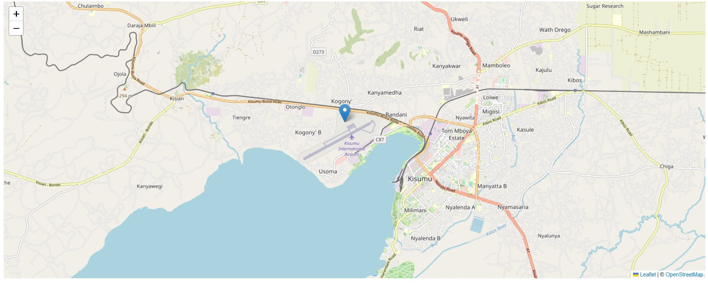
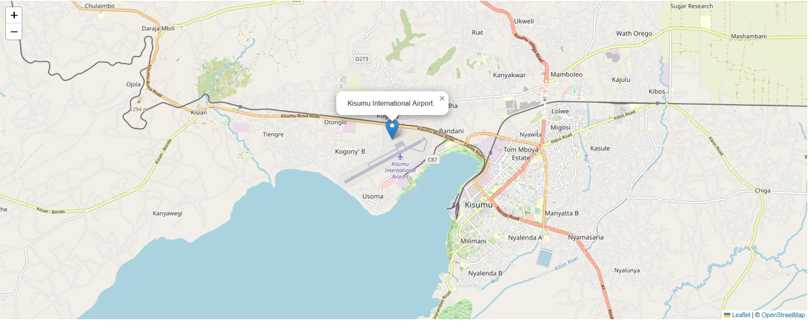
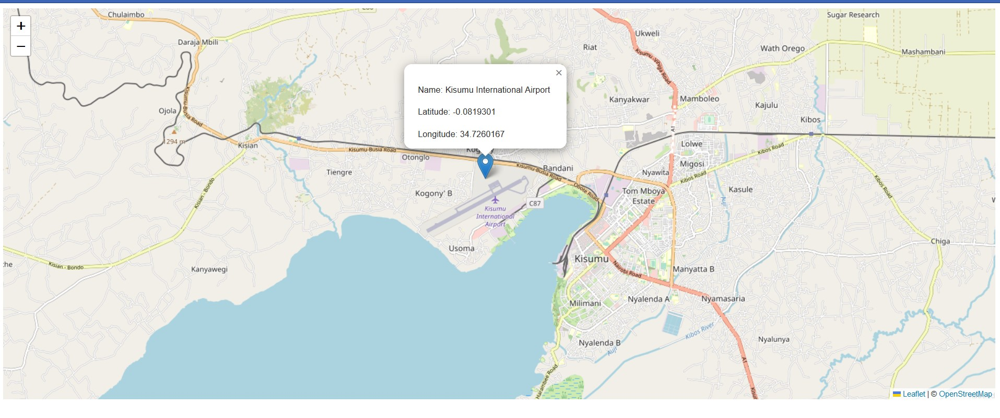
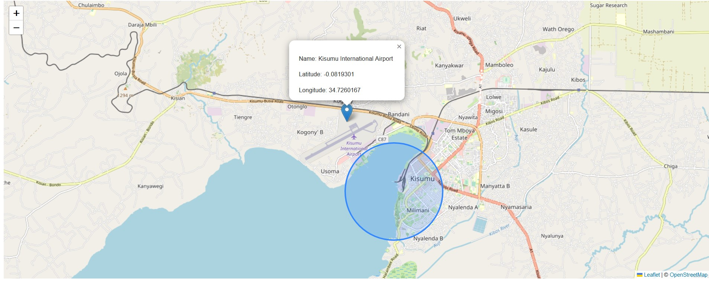
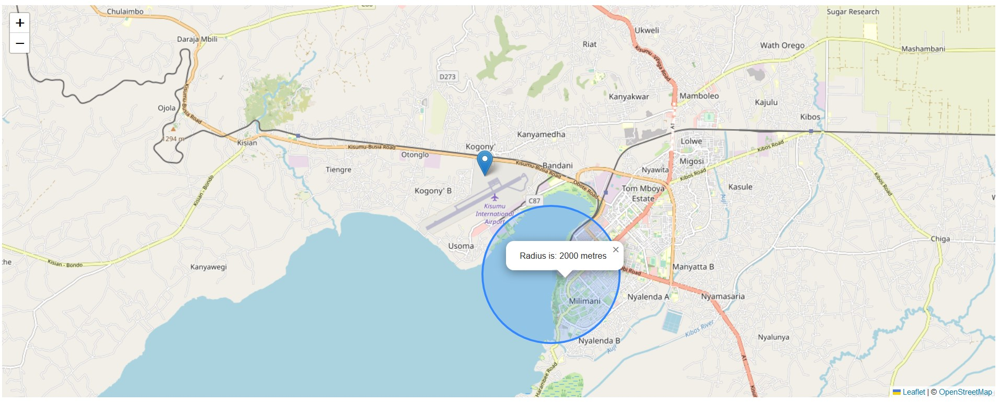
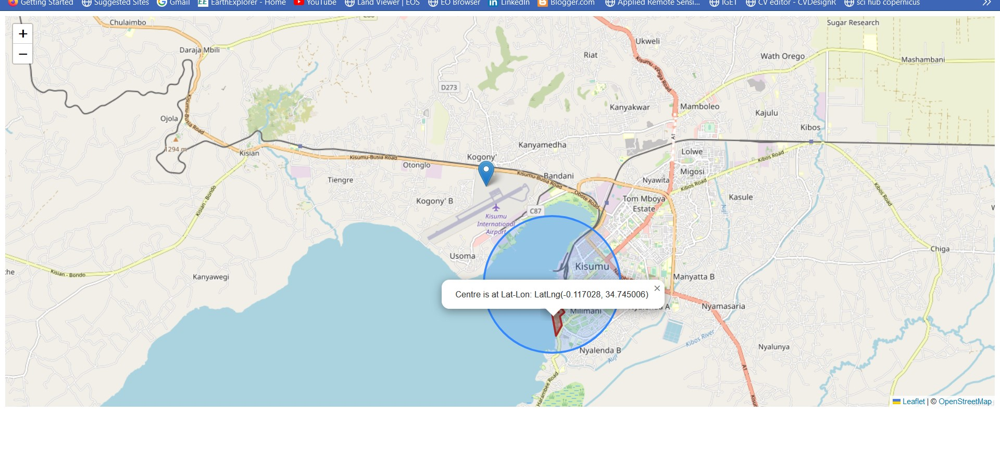

Chapter 3 Add ons
Like in the ultimate finale of a series where the episode begins with “Previously on…”, this chapter shall be a continuation of Chapter 2.
So we have a plain looking webmap like the one shown below.
knitr::include_graphics(rep("D:/gachuhi/my-leaflet/images/kisumu-leaflet.jpg"))
However, although a cool looking webmap, it offers no sort of information to the viewer except that it is an interactive map interface. In order to create some information, such as the location of Kisumu and other features you want to highlight, markers are one way of displaying this kind of information.
In the last chapter we had last left our main.js file looking like in the image above. Ensure yours is also the same, but we encourage to explore with other leaflet layers available from here.
3.1 A marker
Many people could possible not know where Kisumu, is, so lets indicate its location with a simple pin marker. To be more specific, let’s pinpoint Kisumu International Airport.
// Location of Kisumu International Airport
var marker = L.marker([-0.0819301, 34.7260167]).addTo(map);knitr::include_graphics(rep("D:/gachuhi/my-leaflet/images/kisumu-international-airport.jpg"))
Can you try creating a marker for your home location, not forgetting to change the setView method you had initially started with in this map creating journey?
Alright, we have a marker. But as they say, going the extra mile is what counts in both the career as well as personal goals. Let’s try to make this marker have some information, called attributes in GIS. Let’s say the attributes we want to add are the name of the airport and other auxillary data.
3.2 A marker with a popup
To create popups, leaflet provides the bindPopup method. It is especially easy if you already have a marker variable in place, as in our case.
// Create popup of Kisumu international Airport
marker.bindPopup("Kisumu International Airport.").openPopup();knitr::include_graphics(rep("D:/gachuhi/my-leaflet/images/kisumu-airport-popup.jpg"))
What has just happened is that bindPopup binds the popup content– “Kisumu International Airport” to the marker. The following openPopup method chained to the method opens the popup at that specified latitude longitude. If you remove, or comment // out the popUp method, you will have to click the marker to see the popup content. Try it out.
Markers can also work with html elements, such as when you want to display additional metadata, say the owner of the place, size of land et cetera. In the below case, we have added the lat-lon coordinates of Kisumu airport location. I would advise not to include lengthy information in an HTML marker element.
// With html content
marker.bindPopup("<br>Name: Kisumu International Airport</br><br>Latitude: -0.0819301</br><br>Longitude: 34.7260167</br>").openPopup();knitr::include_graphics(rep("D:/gachuhi/my-leaflet/images/marker-html.jpg"))
3.3 Different markers and popups
So far you have seen pin markers, but there are also other kinds of markers, such as circles and rectangles! Unlike the pin markers we have been experimenting with, these other markers require additional options, such as radius for circle and lat-long cooordinates for rectangles. Let’s have a go with each.
Starting with a circle, let’s start by inserting a circle to show the location of Kisumu Museum.
// Circle over Kisumu Museum
var circle = L.circle([-0.107637, 34.7435975]).setRadius(2000).addTo(map);knitr::include_graphics(rep("D:/gachuhi/my-leaflet/images/kisumu-museum-circle.jpg"))
The below code will also create a slightly similar circle marker, the only difference is that in the preceding one we didn’t insert {options} and we set radius using the setRadius method. In the second one below, we have been very specific in what we want –our specifications going into the curly brackets {} before adding the circle marker to our map. Brackets in JavaScript denote dictionaries. Dictionaries in javascript and even in python are used to denote key-value pairs. Best for look-ups.
var circle = L.circle([-0.107637, 34.7435975], {
color: 'blue',
fillColor: 'blue',
fillOpacity: .5,
radius: 2000
}).addTo(map);As we had mentioned earlier, other marker elements such as circles and rectangles can have popups attached to them. Ready for something cool? We will attach a popup into our circle. Not just any other ordinary hard coded popup but one which relies on other Leaflet JavaScript methods to generate an output. In our case, we want a pop up that shows the radius of our circle automatically.
// Circle marker pop up for Kisumu Museum
var getRadius = circle.getRadius();
circle.bindPopup("Radius is: " + getRadius.toString() + " metres");In our above code, getRadius gets the radius of our circle marker. bindPopup as has already been severally explained binds the popup content to our circle marker. But there is a catch. The variable getRadius is used to print out the results, which is 2000 of course. However, bindPopup only understands strings so we convert our variable result to a string using toString(). We also added other strings to give the popup a wholesome result that is understandable to every Tom, Dick, Harry and Harriet.
knitr::include_graphics(rep("D:/gachuhi/my-leaflet/images/circle-radius.jpg"))
Finally, let’s try with a rectangle. Actually, leaflet allows us to create polygons, and with a polygon, you can also create rectangles. Let’s work with the polygon class instead.
Copy the following coordinates.
// Draw rectangle around Kisumu Wildlife Impala Park
var impalaParkCoordinates = [
[-0.1144753, 34.743418],
[-0.115097, 34.745242],
[-0.114238, 34.745071],
[-0.114002, 34.746101],
[-0.115054, 34.746787],
[-0.115998, 34.745586],
[-0.118444, 34.746208],
[-0.121255, 34.744684]
]Now using the L.polygon class and a few optional parameters, let’s showcase where the Kisumu Wildlife Impala Park is situated.
// Create a polygon using the above coordinates
var impalaParkPolygon = L.polygon(impalaParkCoordinates, {
color: 'brown',
fillOpacity: 0.4
}).addTo(map);You will notice that the Kisumu Museum circle overlaps the location of the Kisumu Impala Park but that is no problem. We will make our popup content appear by default as soon as you load the map. Just like we did for the circle marker, we will make our popup content rely on another variable, in this case getCenter which gets the centroid coordinates of our polygon. We were looking for something cooler such as getArea in Leaflet, one that automatically prints out the area of a polygon in a popup. Unfortunately, we were unable to find it.
// Add popup to the polygon of Kisumu Impala Park
var getCenter = impalaParkPolygon.getCenter();
impalaParkPolygon.bindPopup("Centre is at Lat-Lon: " + getCenter.toString()).openPopup();
If you find the circle marker radius as an obstraction you can comment out it and its dependancies using //.
knitr::include_graphics(rep("D:/gachuhi/my-leaflet/images/polygon-marker.jpg"))
You can get the files used in this exercise here.